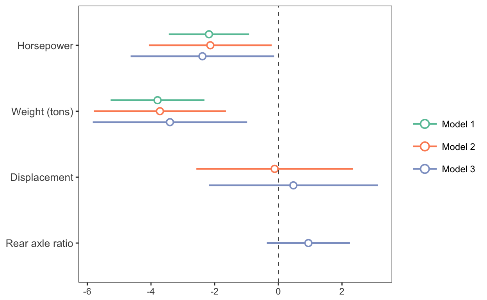
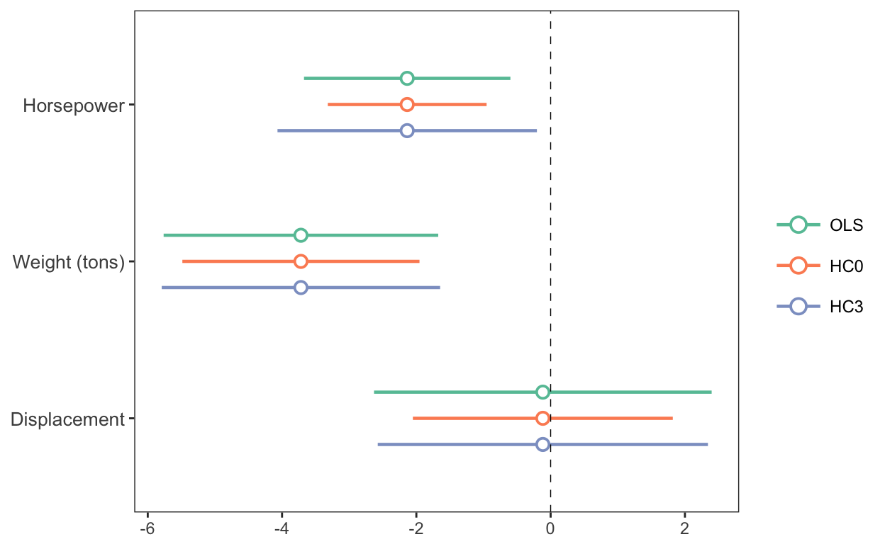
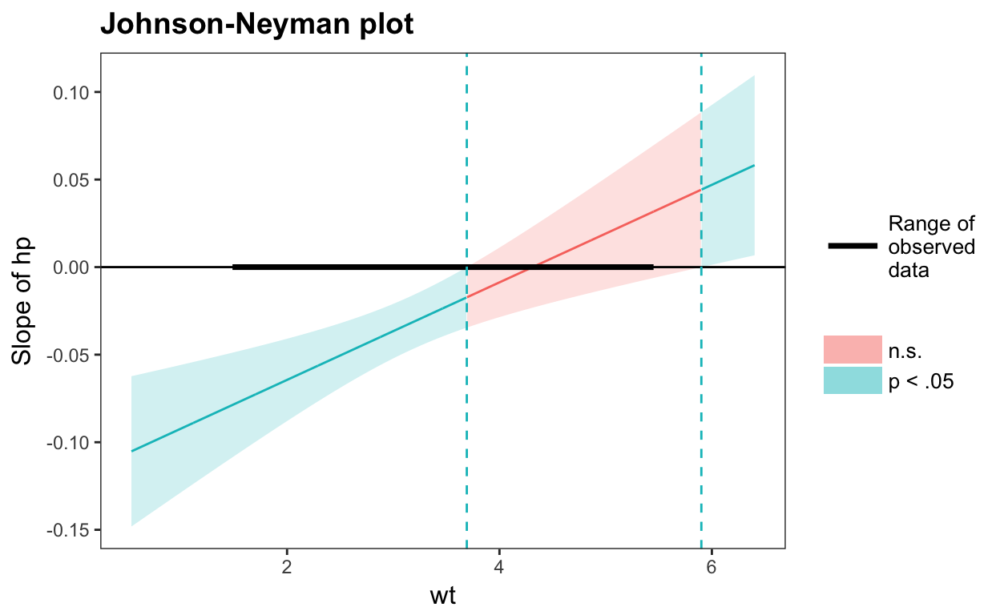
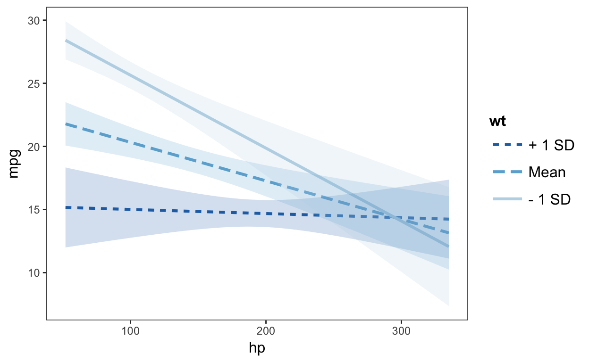
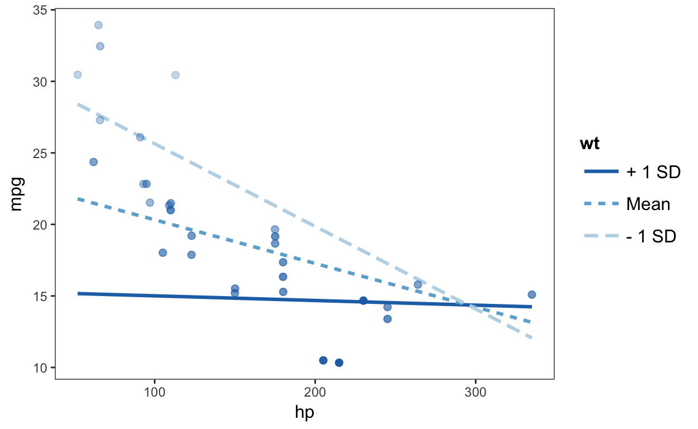
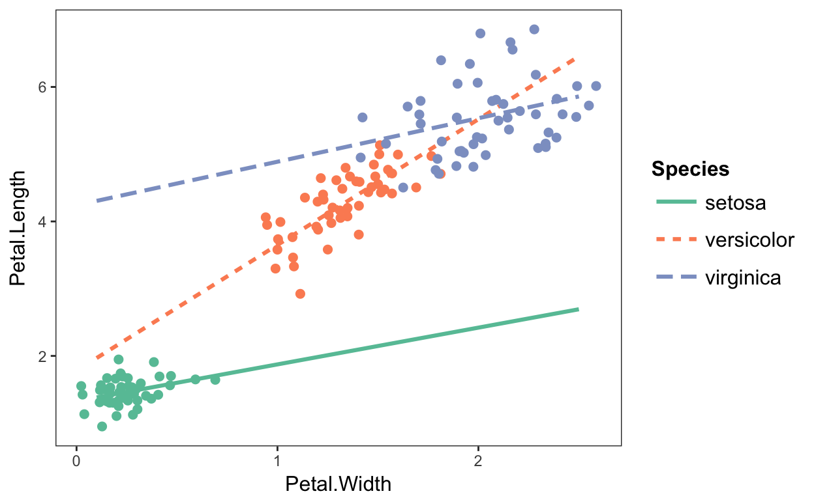
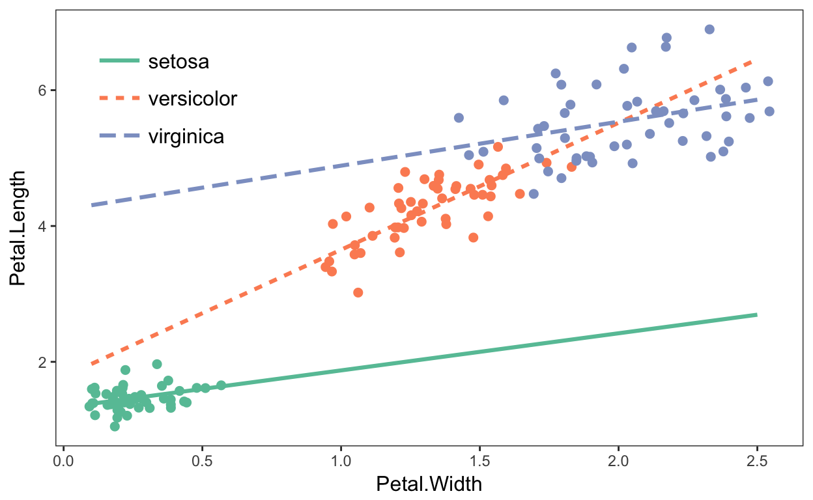

This package consists of a series of functions created by the author (Jacob) to automate otherwise tedious research tasks. At this juncture, the unifying theme is the more efficient presentation of regression analyses. There are a number of functions for visualizing and doing inference for interaction terms. Support for the survey package’s svyglm objects as well as weighted regressions is a common theme throughout.
Note: This is beta software. Bugs are possible, both in terms of code-breaking errors and more pernicious errors of mistaken computation.
Installation
For the most stable version, simply install from CRAN.
install.packages("jtools")If you want the latest features and bug fixes (and perhaps the latest bugs, too) then you can download from Github. To do that you will need to have devtools installed if you don’t already:
install.packages("devtools")Then install the package from Github.
devtools::install_github("jacob-long/jtools")Usage
Here’s a brief synopsis of the current functions in the package:
Summarizing regressions (summ, plot_summs, export_summs)
summ is a replacement for summary that provides the user several options for formatting regression summaries. It supports glm, svyglm, and merMod objects as input as well. It supports calculation and reporting of robust standard errors via the sandwich package.
Basic use:
fit <- lm(mpg ~ hp + wt, data = mtcars)
summ(fit)#> MODEL INFO:
#> Observations: 32
#> Dependent Variable: mpg
#>
#> MODEL FIT:
#> F(2,29) = 69.21, p = 0
#> R-squared = 0.83
#> Adj. R-squared = 0.81
#>
#> Standard errors: OLS
#> Est. S.E. t val. p
#> (Intercept) 37.23 1.6 23.28 0 ***
#> hp -0.03 0.01 -3.52 0 **
#> wt -3.88 0.63 -6.13 0 ***It has several conveniences, like re-fitting your model with scaled variables (scale = TRUE). You have the option to leave the outcome variable in its original scale (scale.response = TRUE), which is the default for scaled models. I’m a fan of Andrew Gelman’s 2 SD standardization method, so you can specify by how many standard deviations you would like to rescale (n.sd = 2).
You can also get variance inflation factors (VIFs) and partial/semipartial (AKA part) correlations. Partial correlations are only available for OLS models. You may also substitute confidence intervals in place of standard errors and you can choose whether to show p values.
summ(fit, scale = TRUE, vifs = TRUE, part.corr = TRUE, confint = TRUE,
pvals = FALSE)#> MODEL INFO:
#> Observations: 32
#> Dependent Variable: mpg
#>
#> MODEL FIT:
#> F(2,29) = 69.21, p = 0
#> R-squared = 0.83
#> Adj. R-squared = 0.81
#>
#> Standard errors: OLS
#> Est. 2.5% 97.5% t val. VIF partial.r part.r
#> (Intercept) 20.09 19.19 20.99 43.82
#> hp -2.18 -3.39 -0.97 -3.52 1.77 -0.55 -0.27
#> wt -3.79 -5.01 -2.58 -6.13 1.77 -0.75 -0.47
#>
#> All continuous predictors are mean-centered and scaled by 1 s.d.Cluster-robust standard errors:
data("PetersenCL", package = "sandwich")
fit2 <- lm(y ~ x, data = PetersenCL)
summ(fit2, robust = TRUE, cluster = "firm", robust.type = "HC3")#> MODEL INFO:
#> Observations: 5000
#> Dependent Variable: y
#>
#> MODEL FIT:
#> F(1,4998) = 1310.74, p = 0
#> R-squared = 0.21
#> Adj. R-squared = 0.21
#>
#> Standard errors: Cluster-robust, type = HC3
#> Est. S.E. t val. p
#> (Intercept) 0.03 0.07 0.44 0.66
#> x 1.03 0.05 20.36 0 ***Of course, summ like summary is best-suited for interactive use. When it comes to share results with others, you want sharper output and probably graphics. jtools has some options for that, too.
First, for tabular output, export_summs is an interface to the huxtable package’s huxreg function that preserves the niceties of summ, particularly its facilities for robust standard errors and standardization. It also concatenates multiple models into a single table.
fit <- lm(mpg ~ hp + wt, data = mtcars)
fit_b <- lm(mpg ~ hp + wt + disp, data = mtcars)
fit_c <- lm(mpg ~ hp + wt + disp + drat, data = mtcars)
export_summs(fit, fit_b, fit_c, scale = TRUE, scale.response = TRUE,
note = "")| (1) | (2) | (3) | |
|---|---|---|---|
| (Intercept) | 0.00 | 0.00 | 0.00 |
| (0.08) | (0.08) | (0.08) | |
| hp | -0.36 *** | -0.35 ** | -0.40 ** |
| (0.10) | (0.13) | (0.13) | |
| wt | -0.63 *** | -0.62 *** | -0.56 *** |
| (0.10) | (0.17) | (0.18) | |
| disp | -0.02 | 0.08 | |
| (0.21) | (0.22) | ||
| drat | 0.16 | ||
| (0.12) | |||
| N | 32 | 32 | 32 |
| R2 | 0.83 | 0.83 | 0.84 |
In RMarkdown documents, using export_summs and the chunk option results = 'asis' will give you nice-looking tables in HTML and PDF output. Using the to.word = TRUE argument will create a Microsoft Word document with the table in it.
Another way to get a quick gist of your regression analysis is to plot the values of the coefficients and their corresponding uncertainties with plot_summs (or the closely related plot_coefs). jtools has made some slight changes to ggplot2 geoms to make everything look nice; and like with export_summs, you can still get your scaled models and robust standard errors.
plot_summs(fit, fit_b, fit_c, scale = TRUE, robust = TRUE,
coefs = c("Horsepower" = "hp", "Weight (tons)" = "wt",
"Displacement" = "disp", "Rear axle ratio" = "drat"))
And since you get a ggplot object in return, you can tweak and theme as you wish.
plot_coefs works much the same way, but without support for summ arguments like robust and scale. This enables a wider range of models that have support from the broom package but not for summ. And you can give summ objects to plot_coefs since this package defines tidy methods for summ objects.
For instance, I could compare the confidence bands with different robust standard error specifications using plot_coefs by giving the summ objects as arguments.
summ_fit_1 <- summ(fit_b, scale = TRUE)
summ_fit_2 <- summ(fit_b, scale = TRUE, robust = TRUE,
robust.type = "HC0")
summ_fit_3 <- summ(fit_b, scale = TRUE, robust = TRUE,
robust.type = "HC3")
plot_coefs(summ_fit_1, summ_fit_2, summ_fit_3,
model.names = c("OLS","HC0","HC3"),
coefs = c("Horsepower" = "hp", "Weight (tons)" = "wt",
"Displacement" = "disp"))
Exploring interactions
Unless you have a really keen eye and good familiarity with both the underlying mathematics and the scale of your variables, it can be very difficult to look at the ouput of regression model that includes an interaction and actually understand what the model is telling you.
This package contains several means of aiding understanding and doing statistical inference with interactions.
Johnson-Neyman intervals and simple slopes analysis
The “classic” way of probing an interaction effect is to calculate the slope of the focal predictor at different values of the moderator. When the moderator is binary, this is especially informative—e.g., what is the slope for men vs. women? But you can also arbitrarily choose points for continuous moderators.
With that said, the more statistically rigorous way to explore these effects is to find the Johnson-Neyman interval, which tells you the range of values of the moderator in which the slope of the predictor is significant vs. nonsignificant at a specified alpha level.
The sim_slopes function will by default find the Johnson-Neyman interval and tell you the predictor’s slope at specified values of the moderator; by default either both values of binary predictors or the mean and the mean +/- one standard deviation for continuous moderators.
fiti <- lm(mpg ~ hp * wt, data = mtcars)
sim_slopes(fiti, pred = hp, modx = wt, jnplot = TRUE)#> JOHNSON-NEYMAN INTERVAL
#>
#> The slope of hp is p < .05 when wt is OUTSIDE this interval:
#> [3.69, 5.9]
#> Note: The range of observed values of wt is [1.51, 5.42]
#> SIMPLE SLOPES ANALYSIS
#>
#> Slope of hp when wt = 4.2 (+ 1 SD):
#> Est. S.E. p
#> 0.00 0.01 0.76
#>
#> Slope of hp when wt = 3.22 (Mean):
#> Est. S.E. p
#> -0.03 0.01 0.00
#>
#> Slope of hp when wt = 2.24 (- 1 SD):
#> Est. S.E. p
#> -0.06 0.01 0.00The Johnson-Neyman plot can really help you get a handle on what the interval is telling you, too. Note that you can look at the Johnson-Neyman interval directly with the johnson_neyman function.
The above all generalize to three-way interactions, too.
Visualizing interaction effects
This function plots two- and three-way interactions using ggplot2 with a similar interface to the aforementioned sim_slopes function. Users can customize the appearance with familiar ggplot2 commands. It supports several customizations, like confidence intervals.
interact_plot(fiti, pred = hp, modx = wt, interval = TRUE)
You can also plot the observed data for comparison:
interact_plot(fiti, pred = hp, modx = wt, plot.points = TRUE)
The function also supports categorical moderators—plotting observed data in these cases can reveal striking patterns.
fitiris <- lm(Petal.Length ~ Petal.Width * Species, data = iris)
interact_plot(fitiris, pred = Petal.Width, modx = Species, plot.points = TRUE)
You may also combine the plotting and simple slopes functions by using probe_interaction, which calls both functions simultaneously. Categorical by categorical interactions can be investigated using the cat_plot function.
Other stuff
theme_apa
This will format your ggplot2 graphics to make them (mostly) appropriate for APA style publications. There’s no drop-in, perfect way to get plots into APA format sight unseen, but this gets you close and returns a ggplot object that can be further tweaked to your specification.
The plots produced by other functions in this package use theme_apa, but use its options to position the plots and alter other details to make them more in line with ggplot2 defaults than APA norms.
You might start with something like the above interaction plots and then use theme_apa to tune it to APA specification. Note the legend.pos option:
p <- interact_plot(fitiris, pred = "Petal.Width", modx = "Species", plot.points = TRUE)
p + theme_apa(legend.pos = "topleft")
You may need to make further changes to please your publisher, of course. Since these are regular ggplot theme changes, it shouldn’t be a problem.
svycor
This function extends the survey package by calculating correlations with complex survey designs, a feature absent from survey. Users may request significance tests, which are calculated via bootstrap by calling the weights package.
library(survey)
data(api)
dstrat <- svydesign(id = ~1, strata = ~stype, weights = ~pw, data = apistrat, fpc = ~fpc)
svycor(~ api00 + api99 + dnum, design = dstrat, sig.stats = TRUE)#> api00 api99 dnum
#> api00 1 0.98* 0.25*
#> api99 0.98* 1 0.24*
#> dnum 0.25* 0.24* 1Tests for survey weight ignorability
In keeping with the package’s attention to users of survey data, I’ve implemented a couple of tests that help to check whether your model is specified correctly without survey weights. It goes without saying that you shouldn’t let statistical tests do your thinking for you, but they can provide useful info.
The first is wgttest, which implements the DuMouchel-Duncan (1983) procedure and is meant in part to duplicate the user-written Stata procedure of the same name. It can both test whether the model fit overall is changed with the addition of weights as well as show you which coefficients are most affected.
The next is pf_sv_test, short for Pfeffermann-Sverchkov (1999) test, which focuses on residual correlation with weights. You’ll need the boot package for this one.
To run both at once, you can use weights_tests.
Others
gscale, center_lm, scale_lm, and svysd each do some of the behind the scenes computation in the above functions, but could do well for end users as well. See the documentation for more.
Details on the arguments can be accessed via the R documentation (?functionname). There are now vignettes documenting just about everything you can do as well.
Contributing
I’m happy to receive bug reports, suggestions, questions, and (most of all) contributions to fix problems and add features. I prefer you use the Github issues system over trying to reach out to me in other ways. Pull requests for contributions are encouraged.
Please note that this project is released with a Contributor Code of Conduct. By participating in this project you agree to abide by its terms.
License
The source code of this package is licensed under the MIT License.